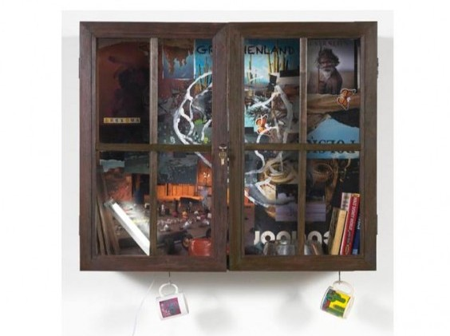
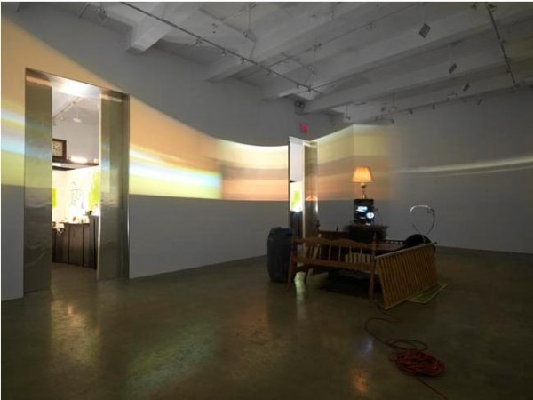
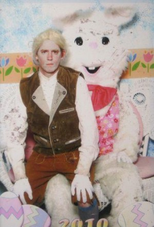
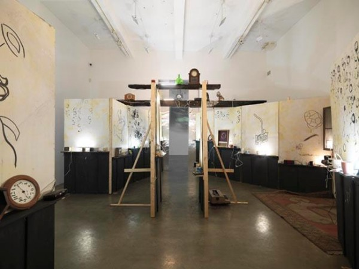

-
The Space of Time: Stephen G. Rhodes at Metro Pictures
by Susannah Edelbaum January 20, 2011
Entering the successive set of rooms holding Stephen G. Rhodes’ new show at Metro Pictures, a viewer might get the impression he’s walking through Grandpa’s garage, cleaned up, albeit resentfully, after fifty-some years. In a way, one is peeking in on the mess of an idiosyncratic old man – Rhodes’ referent for his work here is Immanuel Kant’s relationship with his servant, Lampe. His introduces the show with an excerpt from Kant’s “The Illness of the Head” which the artist translated himself, either very directly or incredibly sloppily, depending on one’s stance on translation.
Rhodes points out in a footnote that Lampe woke his master daily with several cups of coffee or tea, in order to relieve “writerly and bodily” constipation. Hence the dozens of mugs, some broken, some silly – one actually says “Grandpa” on it – that line rough shelves and fill cabinets built throughout the gallery. Makeshift walls give way to semi-hidden display cases, themselves messy little satellites located in a specific, curated relationship to the whole of the show. These contain yet more mugs, along with a pointed selection of books.
In a separate footnote, Rhodes mentions that Kant was obsessed with travel and masturbation, though he never actually left Kaliningrad and resisted masturbating. The cabinets’ contents refer to these tensions. One case contains a copy of the Kama Sutra leaning against a guide to Walt Disney World leaning, in turn, against Lonely Planet: Poland. The backs of the cases are roughly decoupaged, and though it’s easy to miss the images while looking at all the mugs and assorted texts, peer closely and you’ll see a photograph of a man in the woods pulling down his pants, or magazine clippings of an Australian Aborigine. Other images in the cabinets are stills from the four films projected simultaneously in the gallery’s second room. Hopefully these are supposed to be funny, because that is what they are. Booming, drumming, and yelling make up the soundtrack to a man in a long white wig – presumably Kant – doing mundane things. A woman in an old-fashioned dress walks around outside. A truck drives past. Watching the be-wigged character sweeping or curling a flaming ball, in darkness and futility, is engrossing.
Suddenly the stacked quadri-projector apparatus in the center of the room spins, and all the videos rotate along the walls. This might serve as inspiration to run along with them to avoid getting caught in the light. It’s a better effect if the moving and spinning happens when the room’s bass-heavy background suddenly cuts to “Running On Empty” by Jackson Browne. Time is of the essence here, quite literally. In a separate footnote, Rhodes writes that after his first round of coffee or tea, “they say the ladies would mark the time of day when [Kant] passed.” And so the mugs adorning almost every flat space in the show are interspersed with clocks. Alarm clocks, digital clocks, clocks of all kinds. One of the last pieces before the exit is an oversized, white-faced, roman numeral clock, leaning by its lonesome against the wall. Is this a kind of coda to the rest of the installation or an invitation to the viewer to make like Kant and get punctual?